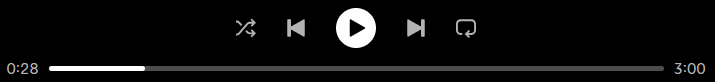

Exploring popularity, genres, and audio features across decades of music data. Scroll down to begin the journey.
Spotify assigns every track a popularity score from 0 to 100, based on how often it's been played recently. It's Spotify's own measure of "what people are actually listening to."
But here's the question: do most songs live in the mainstream spotlight, or quietly in the shadows?
💡 Question: What makes a song popular? Is it the genre? The time? Or something deeper? Let's find out.

The histogram reveals a surprising pattern: the tallest bar is at popularity 0–5, containing 4,036 tracks — more than any other bin. That means the most common fate for a song on Spotify is to remain largely unheard. So what kind of songs escape this fate? The answer hides in an unexpected place: multi-genre tracks. Notice how a small slice — only 1,651 tracks (6.8% of all songs) — carry multiple genre tags. Yet as we move toward higher popularity, their presence grows dramatically.
When we split the histogram, a striking gap appears. Single-genre tracks (22,511 tracks) dominate the low and middle bins, but fade out above 80. Multi-genre tracks tell a completely different story — they barely appear in low bins, yet dominate the highest popularity ranges. In the top bins (80–100), multi-genre tracks outnumber single-genre tracks despite being only 6.8% of the dataset. Look at the 90–95 bin: 4 single-genre tracks vs. 39 multi-genre tracks.
Fitting Gaussian curves reveals the true gap. Multi-genre tracks have a mean popularity of 66.01 — far above the single-genre mean of 39.46. Their entire distribution shifts rightward, with almost no songs in the 0–20 range. This "popularity premium" likely comes from audience crossover — a song tagged both "Pop" and "Hip Hop" gets playlists from both fanbases.
Here's the catch: multi-genre tracks are harder to analyze because their audio features (valence, energy, danceability) blend multiple styles. For clean, interpretable insights, we'll focus on single-genre tracks only moving forward.
Now let's ask: what makes each genre unique? In the next part, we dive into audio features by genre — and discover something surprising.
How do danceability, energy, and valence differ across genres? This step reveals the sonic fingerprints that distinguish EDM from Rock, or Pop from R&B.
As genres like Latin and EDM emerged and grew from the 70s onward, the musical landscape became richer and more diverse.
But while the number of genres increased, their popularity levels have started to converge. The gap between them has decreased, and we've moved from an era of a few dominant genres to a new age where we listen to a bit of everything.
So, where do YOUR tastes fit in? Let's explore.
Search for songs, compare audio features, and explore genre definitions.